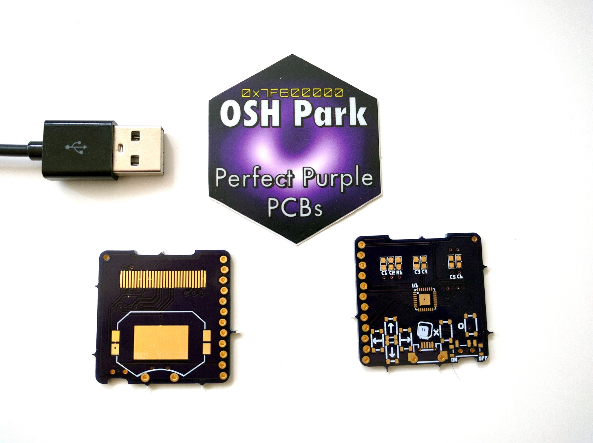

Got PCBs¶
Published on 2019-05-16 in PewPew M4.
It took some time, but the PCBs are already here (USB plug for scale):

I’m not sure I like the new style of mousebites from @oshpark — I can see how they save on drills, and it’s probably also much faster, but I can’t remove them with a knife anymore — I have to use a rotary tool. Then again, with the rotary tool it looks cleaner, so maybe it’s not so bad.
Also, looking at the number on the sticker, I think I might have missed a couple. Oops.
I have now almost all the parts, except for the buttons — they are on the slow boat. Unfortunately, I used the buttons as jumpers, to make some of the GND connections and save on vias, so it won’t work without them.